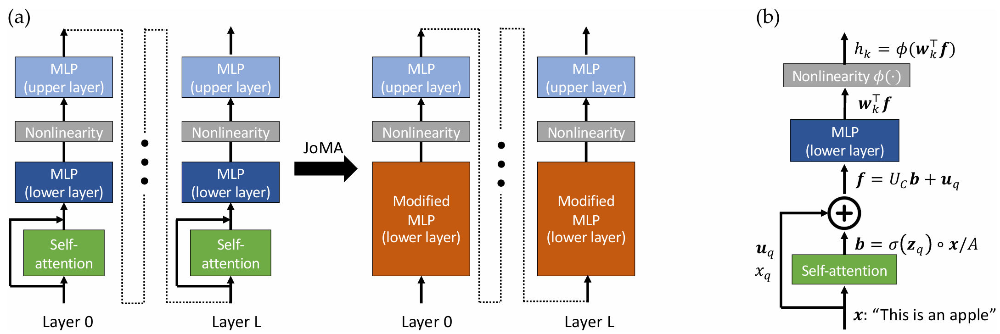

Yiping Wang 王宜平
 |
Yiping Wang |
About me
I'm a second-year Ph.D. student in Paul G. Allen School of Computer Science & Engineering from University of Washington. I feel very fortunate to have worked under the guidance of Prof. Simon Shaolei Du since 2022 summer.
My main research interest broadly spread across machine learning theory and foundation models. For the theortical part, I care about understanding the foundations of deep learning and representation learning, especially the training dynamics of the basic components like Transformer. For the empirical part, I am keen on developing efficient algorithms with strong theoretical guarantees or insightful observations. Currently, in this aspect, I'm working on data selection/scheduling for multi-modal pretraining and improving inference efficiency of LLM. I'm also working on some projects related to video generation. In addition, I have always held a strong enthusiasm for understanding the essence of intelligence and exploring the cross-cutting areas of mathematics, physics, and AGI, such as using LLMs for mathematical proof and seeking scientific truth.
I'm grateful to all my collaborators and mentors along the way. I'm priviledged to be working closely with Dr. Yuandong Tian since 2023 spring. Besides, I'm also having intern at Microsoft started from June 2024, fortunate to be advised by Yelong Shen and Shuohang Wang. During my undergraduate, I was fortunate to work closely with Prof. Huaxiu Yao and Prof. Linjun Zhang.
Previously, I studied Computer Science and Mathematics in Zhejiang University, got an honors degree from Chu Kochen Honors College.
News
02/2025: One paper (StoryEval) is accepted by CVPR 2025!
12/2024: Releasing a new video generation benchmark StoryEval!
12/2024: Attending NeurIPS 2024 in Vancouver and presenting our CLIPLoss paper!
09/2024: Attending MoDL 2024 in New York sponsored by Simons Foundation, and presenting our CLIPLoss poster!
09/2024: Our CLIPLoss paper is accepted by NeurIPS 2024 as spotlight!
06/2024: Started my internship at Microsoft!
01/2024: One paper (JoMA) is accepted by ICLR 2024!
12/2023: Attended NeurIPS 2023 in New Orleans!
09/2023: One paper (Scan&Snap) is accepted by NeurIPS 2023!
09/2023: Become a husky in UW!
Research directions and Selected Papers
Data Selection Algorithm
 |
CLIPLoss and Norm-Based Data Selection Methods for Multimodal Contrastive Learning
|
Video Generation Evaluation
 |
Is Your World Simulator a Good Story Presenter? A Consecutive Events-Based Benchmark for Future Long Video Generation
|
Theory of Transformer Dynamics
 |
Scan and Snap: Understanding Training Dynamics and Token Composition in 1-layer Transformer
|
|  |
JoMA: Demystifying Multilayer Transformers via JOint Dynamics of MLP and Attention
|